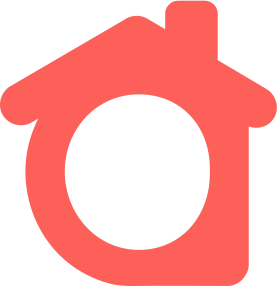
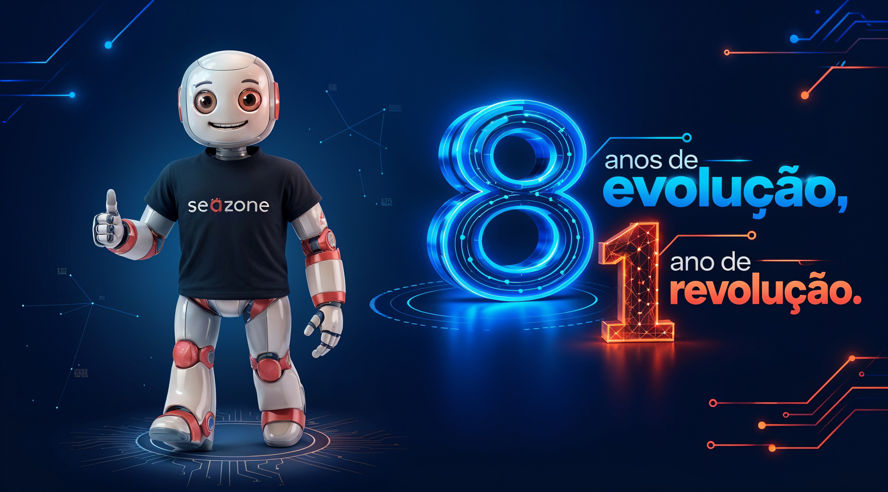
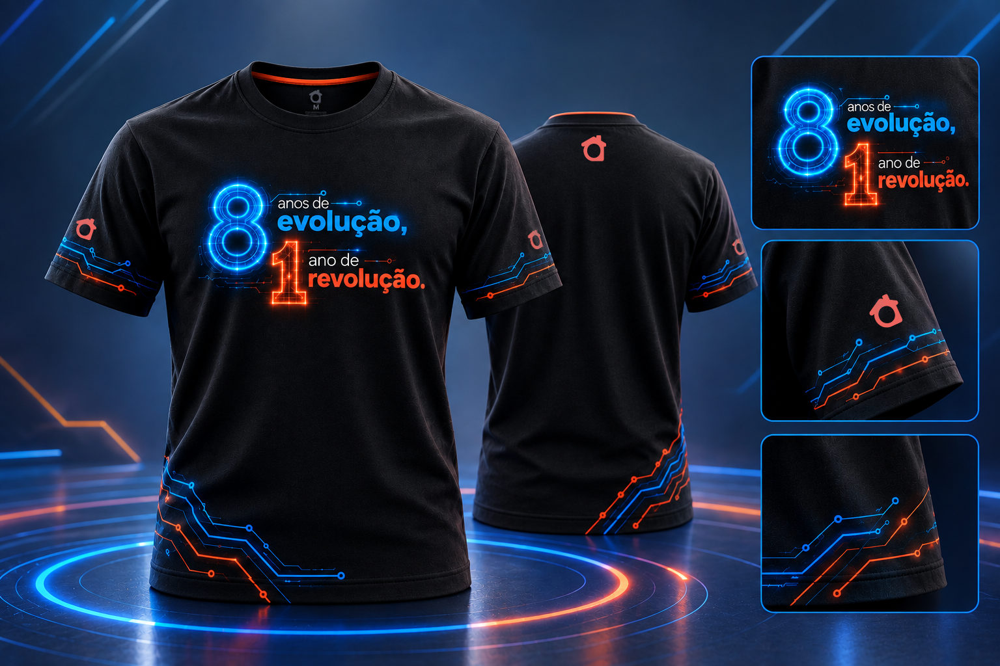
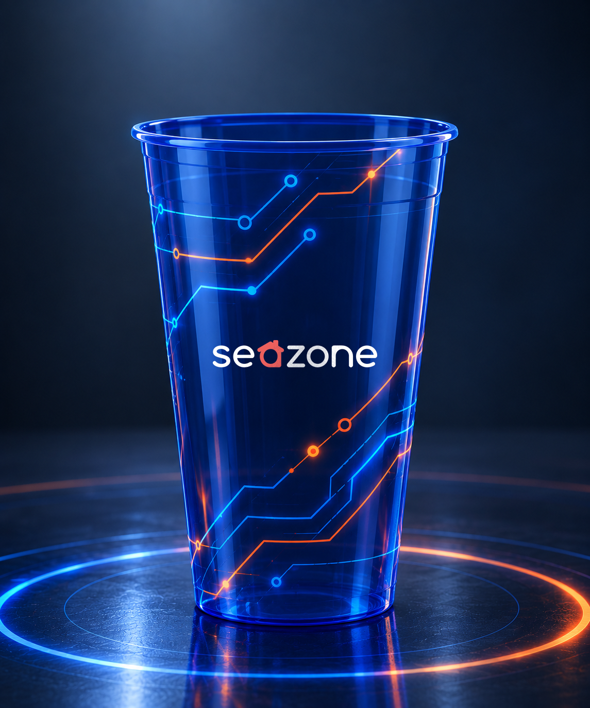
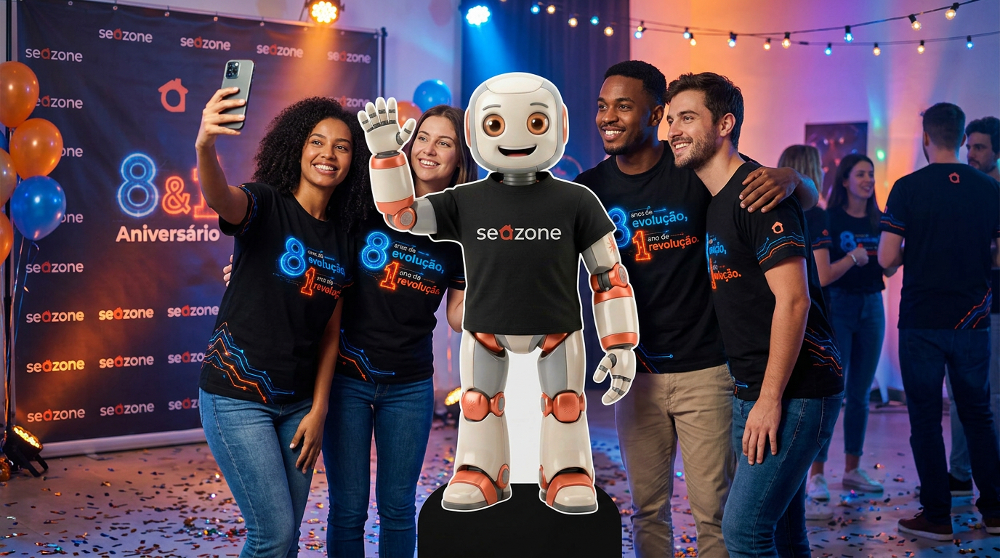

Identidade visual · Festa de 8 anos SeazoneO mote junta duas histórias numa frase só: a de quem a Seazone vem se tornando ao longo de oito anos e a do salto que o AI First trouxe no último ano.
Cada ano trouxe mais processo, mais tecnologia e mais gente fazendo a operação acontecer. É uma construção contínua: a Seazone não parou de evoluir em nenhum momento.
Com o AI First, a IA entrou no dia a dia de todos os times. Isso vai além de fazer melhor o que já fazíamos: muda a forma como o aluguel por temporada funciona, e a Seazone está puxando essa mudança no mercado.

Ele é a revolução em forma de personagem. O Claudinho representa a IA que virou nosso braço direito em praticamente todas as tarefas.
As cores foram medidas nos mockups da festa. Derivam do azul e do coral de SZS, mas ficam mais elétricas e com brilho, sempre sobre fundo escuro. Clique no HEX para copiar.
Proporção de referência: o fundo escuro domina, o azul estrutura e o laranja aparece como faísca. Laranja demais faz perder a leitura de "revolução como destaque".
A mesma família de SZS em toda a festa. O contraste entre Light e Bold reproduz a leitura do mote: "anos de" sussurra, "evolução" fala alto.
A linguagem vem da tecnologia: trilhas de circuito que sempre sobem (evolução) e se cruzam em azul e laranja, anéis de luz no "chão" e brilho neon nos numerais.
Só contorno, com glow. O 8 sempre em azul, o 1 sempre em laranja. Nunca preenchidos.
Linhas finas com curvas a 45° e nós nas pontas. Sobem da esquerda para a direita, saindo das bordas e barras.
Elipses concêntricas como um palco. Azul dominante, com o laranja entrando por um lado.
Azul como padrão e laranja só para o destaque. Herdadas da pílula SZS, com brilho mais forte.

Wordmark branco com a casinha coral. Na camiseta, a casinha sozinha na manga e nas costas.
Nada de fundo claro. O brilho sai dos elementos, não do fundo, como numa pista iluminada.
Mockups das peças. Clique para ampliar.


